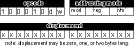

|
Table of Content | |
|
Table of Content | |
4.6.3 80386 Register Addressing Modes
The 80386 (and later) processors provide 32 bit registers.
The eight general-purpose registers all have 32 bit equivalents. They are eax, ebx,
ecx, edx, esi, edi, ebp, and esp. If you are using an 80386 or later
processor you can use these registers as operands to several 80386 instructions.
4.6.4 80386 Memory Addressing Modes
The 80386 processor generalized the memory addressing
modes. Whereas the 8086 only allowed you to use bx or bp as base
registers and si or di as index registers, the 80386 lets you
use almost any general purpose 32 bit register as a base or index register. Furthermore,
the 80386 introduced new scaled indexed addressing modes that simplify accessing elements
of arrays. Beyond the increase to 32 bits, the new addressing modes on the 80386 are
probably the biggest improvement to the chip over earlier processors.
4.6.4.1 Register Indirect Addressing Modes
On the 80386 you may specify any general purpose 32 bit
register when using the register indirect addressing mode. [eax], [ebx], [ecx],
[edx], [esi], and [edi] all provide offsets, by default, into the data
segment. The [ebp] and [esp] addressing modes use the stack
segment by default.
Note that while running in 16 bit real mode on the 80386, offsets in these 32 bit registers must still be in the range 0...0FFFFh. You cannot use values larger than this to access more than 64K in a segment. Also note that you must use the 32 bit names of the registers. You cannot use the 16 bit names. The following instructions demonstrate all the legal forms:
mov al, [eax]
mov al, [ebx]
mov al, [ecx]
mov al, [edx]
mov al, [esi]
mov al, [edi]
mov al, [ebp] ;Uses SS by default.
mov al, [esp] ;Uses SS by default.
The indexed addressing modes (register indirect plus a displacement) allow you to mix a 32 bit register with a constant. The base/indexed addressing modes let you pair up two 32 bit registers. Finally, the base/indexed/displacement addressing modes let you combine a constant and two registers to form the effective address. Keep in mind that the offset produced by the effective address computation must still be 16 bits long when operating in real mode.
On the 80386 the terms base register and index register actually take on some meaning. When combining two 32 bit registers in an addressing mode, the first register is the base register and the second register is the index register. This is true regardless of the register names. Note that the 80386 allows you to use the same register as both a base and index register, which is actually useful on occasion. The following instructions provide representative samples of the various base and indexed address modes along with syntactical variations:
mov al, disp[eax] ;Indexed addressing
mov al, [ebx+disp] ; modes.
mov al, [ecx][disp]
mov al, disp[edx]
mov al, disp[esi]
mov al, disp[edi]
mov al, disp[ebp] ;Uses SS by default.
mov al, disp[esp] ;Uses SS by default.
The following instructions all use the base+indexed
addressing mode. The first register in the second operand is the base register, the second
is the index register. If the base register is esp or ebp the
effective address is relative to the stack segment. Otherwise the effective address is
relative to the data segment. Note that the choice of index register does not affect the
choice of the default segment.
mov al, [eax][ebx] ;Base+indexed addressing
mov al, [ebx+ebx] ; modes.
mov al, [ecx][edx]
mov al, [edx][ebp] ;Uses DS by default.
mov al, [esi][edi]
mov al, [edi][esi]
mov al, [ebp+ebx] ;Uses SS by default.
mov al, [esp][ecx] ;Uses SS by default.
Naturally, you can add a displacement to the above addressing modes to produce the base+indexed+displacement addressing mode. The following instructions provide a representative sample of the possible addressing modes:
mov al, disp[eax][ebx] ;Base+indexed addressing
mov al, disp[ebx+ebx] ; modes.
mov al, [ecx+edx+disp]
mov al, disp[edx+ebp] ;Uses DS by default.
mov al, [esi][edi][disp]
mov al, [edi][disp][esi]
mov al, disp[ebp+ebx] ;Uses SS by default.
mov al, [esp+ecx][disp] ;Uses SS by default.
There is one restriction the 80386 places on the index
register. You cannot use the esp register as an index register. It's okay to
use esp as the base register, but not as the index register.
4.6.4.3 80386 Scaled Indexed Addressing Modes
The indexed, base/indexed, and base/indexed/disp addressing modes described above are really special instances of the 80386 scaled indexed addressing modes. These addressing modes are particularly useful for accessing elements of arrays, though they are not limited to such purposes. These modes let you multiply the index register in the addressing mode by one, two, four, or eight. The general syntax for these addressing modes is
disp[index*n]
[base][index*n]
or
disp[base][index*n]
where "base" and "index" represent any 80386 32 bit general purpose registers and "n" is the value one, two, four, or eight.
The 80386 computes the effective address by adding disp,
base, and index*n together. For example, if ebx contains 1000h and esi
contains 4, then
mov al,8[ebx][esi*4] ;Loads AL from location 1018h
mov al,1000h[ebx][ebx*2] ;Loads AL from location 4000h
mov al,1000h[esi*8] ;Loads AL from location 1020hNote that the 80386 extended indexed, base/indexed, and base/indexed/displacement addressing modes really are special cases of this scaled indexed addressing mode with "n" equal to one. That is, the following pairs of instructions are absolutely identical to the 80386:
mov al, 2[ebx][esi*1] mov al, 2[ebx][esi] mov al, [ebx][esi*1] mov al, [ebx][esi] mov al, 2[esi*1] mov al, 2[esi]
Of course, MASM allows lots of different variations on these addressing modes. The following provide a small sampling of the possibilities:
disp[bx][si*2], [bx+disp][si*2], [bx+si*2+disp], [si*2+bx][disp], disp[si*2][bx], [si*2+disp][bx], [disp+bx][si*2]
Because the 80386's addressing modes are more orthogonal, they are much easier to memorize than the 8086's addressing modes. For programmers working on the 80386 processor, there is always the temptation to skip the 8086 addressing modes and use the 80386 set exclusively. However, as you'll see in the next section, the 8086 addressing modes really are more efficient than the comparable 80386 addressing modes. Therefore, it is important that you know all the addressing modes and choose the mode appropriate to the problem at hand.
When using base/indexed and base/indexed/disp addressing
modes on the 80386, without a scaling option (that is, letting the scaling default to
"*1"), the first register appearing in the addressing mode is the base register
and the second is the index register. This is an important point because the choice of the
default segment is made by the choice of the base register. If the base register is ebp
or esp, the 80386 defaults to the stack segment. In all other cases the 80386
accesses the data segment by default, even if the index register is ebp. If
you use the scaled index operator ("*n") on a register, that register is always
the index register regardless of where it appears in the addressing mode:
[ebx][ebp] ;Uses DS by default.
[ebp][ebx] ;Uses SS by default.
[ebp*1][ebx] ;Uses DS by default.
[ebx][ebp*1] ;Uses DS by default.
[ebp][ebx*1] ;Uses SS by default.
[ebx*1][ebp] ;Uses SS by default.
es:[ebx][ebp*1] ;Uses ES.
The examples throughout this chapter will make extensive
use of the 80x86 mov (move) instruction. Furthermore, the mov
instruction is the most common 80x86 machine instruction. Therefore, it's worthwhile to
spend a few moments discussing the operation of this instruction.
Like it's x86 counterpart, the mov instruction
is very simple. It takes the form:
mov Dest, Source
Mov
makes a copy of Source and stores this value
into Dest. This instruction does not affect the original contents of Source. It overwrites
the previous value in Dest. For the most part, the operation of this instruction is
completely described by the Pascal statement:
Dest := Source;
This instruction has many limitations. You'll get ample
opportunity to deal with them throughout your study of 80x86 assembly language. To
understand why these limitations exist, you're going to have to take a look at the machine
code for the various forms of this instruction. One word of warning, they don't call the
80386 a CISC (Complex Instruction Set Computer) for nothing. The encoding for the mov
instruction is probably the most complex in the instruction set. Nonetheless, without
studying the machine code for this instruction you will not be able to appreciate it, nor
will you have a good understanding of how to write optimal code using this instruction.
You'll see why you worked with the x86 processors in the previous chapters rather than
using actual 80x86 instructions.
There are several versions of the mov
instruction. The mnemonic mov describes over a dozen different instructions
on the 80386. The most commonly used form of the mov instruction has the
following binary encoding shownbelow:

The opcode is the first eight bits of the instruction. Bits zero and one define the width of the instruction (8, 16, or 32 bits) and the direction of the transfer. When discussing specific instructions this text will always fill in the values of d and w for you. They appear here only because almost every other text on this subject requires that you fill in these values.
Following the opcode is the addressing mode byte,
affectionately called the "mod-reg-r/m" byte by most programmers. This byte
chooses which of 256 different possible operand combinations the generic mov
instruction allows. The generic mov instruction takes three different
assembly language forms:
mov reg, memory
mov memory, reg
mov reg, reg
Note that at least one of the operands is always a general purpose register. The reg field in the mod/reg/rm byte specifies that register (or one of the registers if using the third form above). The d (direction) bit in the opcode decides whether the instruction stores data into the register (d=1) or into memory (d=0).
The bits in the reg field let you select one of eight different registers. The 8086 supports 8 eight bit registers and 8 sixteen bit general purpose registers. The 80386 also supports eight 32 bit general purpose registers. The CPU decodes the meaning of the reg field as follows:
| reg | w=0 | 16 bit mode w=1 |
32 bit mode w=1 |
|---|---|---|---|
| 000 | AL | AX | EAX |
| 001 | CL | CX | ECX |
| 010 | DL | DX | EDX |
| 011 | BL | BX | EBX |
| 100 | AH | SP | ESP |
| 101 | CH | BP | EBP |
| 110 | DH | SI | ESI |
| 111 | BH | DI | EDI |
To differentiate 16 and 32 bit register, the 80386 and later processors use a special opcode prefix byte before instructions using the 32 bit registers. Otherwise, the instruction encodings are the same for both types of instructions.
The r/m field, in conjunction with the mod field, chooses the addressing mode. The mod field encoding is the following:
| MOD | Meaning |
|---|---|
| 00 | The r/m field denotes a register indirect memory addressing mode or a base/indexed addressing mode (see the encodings for r/m) unless the r/m field contains 110. If MOD=00 and r/m=110 the mod and r/m fields denote displacement-only (direct) addressing. |
| 01 | The r/m field denotes an indexed or base/indexed/displacement addressing mode. There is an eight bit signed displacement following the mod/reg/rm byte. |
| 10 | The r/m field denotes an indexed or base/indexed/displacement addressing mode. There is a 16 bit signed displacement (in 16 bit mode) or a 32 bit signed displacement (in 32 bit mode) following the mod/reg/rm byte . |
| 11 | The r/m field denotes a register and uses the same encoding as the reg field |
The mod field chooses between a register-to-register move
and a register-to/from-memory move. It also chooses the size of the displacement (zero,
one, two, or four bytes) that follows the instruction for memory addressing modes. If
MOD=00, then you have one of the addressing modes without a displacement (register
indirect or base/indexed). Note the special case where MOD=00 and r/m=110. This would
normally correspond to the [bp] addressing mode. The 8086 uses this encoding
for the displacement-only addressing mode. This means that there isn't a true [bp]
addressing mode on the 8086.
To understand why you can use the [bp] addressing
mode in your programs, look at MOD=01 and MOD=10 in the above table. These bit patterns
activate the disp[reg] and the disp[reg][reg] addressing modes.
"So what?" you say. "That's not the same as the [bp]
addressing mode." And you're right. However, consider the following instructions:
mov al, 0[bx]
mov ah, 0[bp]
mov 0[si], al
mov 0[di], ah
These statements, using the indexed addressing modes, perform the same operations as their register indirect counterparts (obtained by removing the displacement from the above instructions). The only real difference between the two forms is that the indexed addressing mode is one byte longer (if MOD=01, two bytes longer if MOD=10) to hold the displacement of zero. Because they are longer, these instructions may also run a little slower.
This trait of the 8086 - providing two or more ways to
accomplish the same thing - appears throughout the instruction set. In fact, you're going
to see several more examples before you're through with the mov instruction.
MASM generally picks the best form of the instruction automatically. Were you to enter the
code above and assemble it using MASM, it would still generate the register indirect
addressing mode for all the instructions except mov ah,0[bp]. It would,
however, emit only a one-byte displacement that is shorter and faster than the same
instruction with a two-byte displacement of zero. Note that MASM does not require that you
enter 0[bp], you can enter [bp] and MASM will automatically
supply the zero byte for you.
If MOD does not equal 11b, the r/m field encodes the memory addressing mode as follows:
| R/M | Addressing mode (Assuming MOD=00, 01, or 10) |
|---|---|
| 000 | [BX+SI] or DISP[BX][SI] (depends on MOD) |
| 001 | [BX+DI] or DISP[BX+DI] (depends on MOD) |
| 010 | [BP+SI] or DISP[BP+SI] (depends on MOD) |
| 011 | [BP+DI] or DISP[BP+DI] (depends on MOD) |
| 100 | [SI] or DISP[SI] (depends on MOD) |
| 101 | [DI] or DISP[DI] (depends on MOD) |
| 110 | Displacement-only or DISP[BP] (depends on MOD) |
| 111 | [BX] or DISP[BX] (depends on MOD) |
Don't forget that addressing modes involving bp
use the stack segment (ss) by default. All others use the data segment (ds)
by default.
If this discussion has got you totally lost, you haven't even seen the worst of it yet. Keep in mind, these are just some of the 8086 addressing modes. You've still got all the 80386 addressing modes to look at. You're probably beginning to understand what they mean when they say complex instruction set computer. However, the important concept to note is that you can construct 80x86 instructions the same way you constructed x86 instructions in Chapter Three - by building up the instruction bit by bit. For full details on how the 80x86 encodes instructions, see the appendices.
There are several important facts you should always
remember about the mov instruction. First of all, there are no memory to
memory moves. For some reason, newcomers to assembly language have a hard time grasping
this point. While there are a couple of instructions that perform memory to memory moves,
loading a register and then storing that register is almost always more efficient. Another
important fact to remember about the mov instruction is that there are many
different mov instructions that accomplish the same thing. Likewise, there
are several different addressing modes you can use to access the same memory location. If
you are interested in writing the shortest and fastest possible programs in assembly
language, you must be constantly aware of the trade-offs between equivalent instructions.
The discussion in this chapter deals mainly with the
generic mov instruction so you can see how the 80x86 processors encode the
memory and register addressing modes into the mov instruction. Other forms of
the mov instruction let you transfer data between 16-bit general purpose
registers and the 80x86 segment registers. Others let you load a register or memory
location with a constant. These variants of the mov instruction use a
different opcode. For more details, see the instruction encodings in Appendix D.
There are several additional mov instructions
on the 80386 that let you load the 80386 special purpose registers. This text will not
consider them. There are also some string instructions on the 80x86 that perform memory to
memory operations. Such instructions appear in the next chapter. They are not a good
substitute for the mov instruction.
|
Table of Content | |
Chapter Four: Memory Layout and
Access (Part 3)
26 SEP 1996